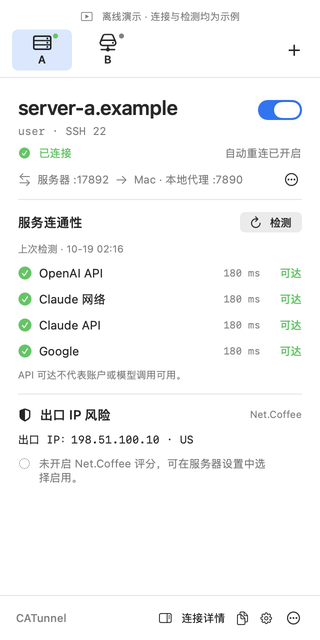
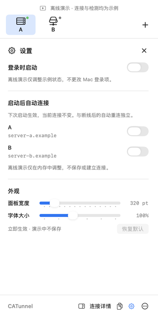
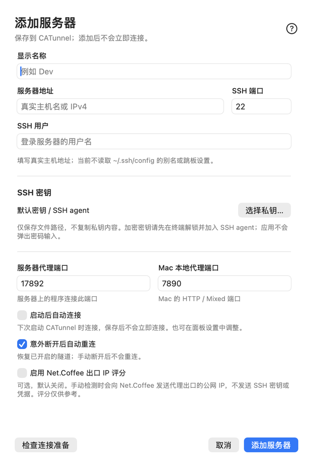
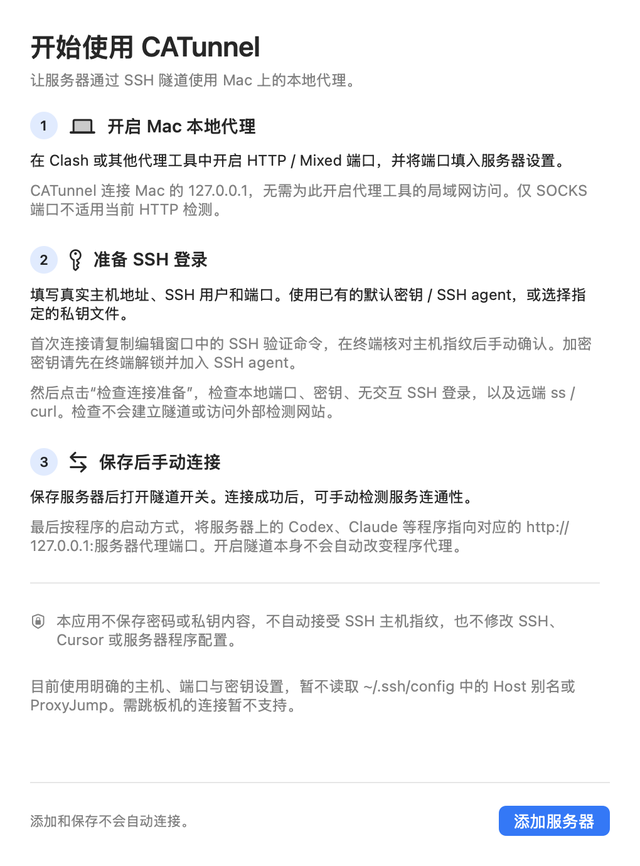

远端的工具，Mac 上的网络。
CATunnel 是一款轻量级原生 macOS 菜单栏应用。它通过 SSH 隧道，让运行在远端服务器上的 Codex、Claude 等工具使用 Mac 上已有的本地代理。
从菜单栏管理多台服务器，独立控制每条连接，并检查流量是否真正到达目标服务。
- macOS 13+
- 应用构建目标
- SwiftUI
- 原生菜单栏应用
- SSH
- 独立反向隧道
- MIT
- 开源许可
工作原理
远端工具连接服务器自己的回环端口。CATunnel 再通过 SSH，把流量转发到 Mac 上的 HTTP 或 mixed 代理。
- 01远端工具Codex · Claude
- 02服务器入口
127.0.0.1:17892 - 03SSH 隧道加密传输
- 04Mac 本地代理
127.0.0.1:7890 - 05目标服务OpenAI · Claude · Google
- 统一管理多台服务器
- 通过顶部页签切换服务器，每条隧道拥有独立状态、开关和自动重连选项。
- 检查实际网络路径
- 按需检测 OpenAI、Claude 和 Google 的连通性；可选 Net.Coffee 出口 IP 信息，与连接状态分别展示。
- 自然融入菜单栏
- 支持登录时启动、按服务器设置启动连接，以及面板宽度和字号调整，按你的使用习惯配置。
请先准备本地代理。CATunnel 不安装代理，也不会自动修改远端工具的配置。API 可达不代表账号或模型调用可用。
为菜单栏而设计
需要时展开面板，连接详情与设置一键可达。下图为 CATunnel 离线截图，服务器和检测结果均为示例；应用界面目前为中文。




更多界面：服务器配置与首次使用引导




重连时，保持同一个入口
固定入口模式通过服务器上的一个小型转接程序，在运行期间保持入口端口。每次 SSH 连接分配不同的临时后端，确认新通道可用后再切换转发目标。
127.0.0.1:17892这样无需等待旧 SSH 会话释放原来的临时端口。应用内还提供“安装并启用”、查找并选择已有 Python，以及按需执行的固定入口状态检查。
- 使用服务器上已有的 Python 3.9+，无需 sudo，不升级系统 Python，也不修改 SSH 配置。
- 唤醒后恢复符合条件的连接，手动停止的连接保持停止；当前源码也限制了失联租约释放请求导致的退出等待。
- Ping0 按钮直接在默认浏览器打开网页，应用内不再自动查询。
快速开始
准备一台已运行 HTTP 或 mixed 代理的 Mac，以及支持 SSH 密钥登录和反向转发、具备 ss 与 curl 的 Linux 服务器。
- 启动本地代理
确认代理的 HTTP 或 mixed 端口，以下示例使用 7890。
- 添加服务器
在 CATunnel 点击 ＋，填写地址、SSH 用户、密钥及两端端口，按引导核实 SSH 主机指纹。
- 检查并连接
执行“检查连接准备”，保存服务器并开启隧道，再检测服务连通性。
- 让远端工具使用入口
在远端服务器上，将工具的代理指向本地入口。对于支持代理环境变量的命令，可以这样运行：
env HTTP_PROXY=http://127.0.0.1:17892 \
HTTPS_PROXY=http://127.0.0.1:17892 \
http_proxy=http://127.0.0.1:17892 \
https_proxy=http://127.0.0.1:17892 \
your-command将 your-command 和端口替换为实际值。这只影响当前命令及其子进程；具体工具的支持情况和 NO_PROXY 设置也会影响路由。
下载预览版
v0.6.0-preview.2 build 5 中文应用界面
解压 ZIP，将 CATunnel.app 移到“应用程序”。预览包尚未经过 Apple 公证；若 macOS 阻止打开，请参照安装说明，无需关闭系统安全保护。应用声明的构建目标为 macOS 13+，实际测试环境见验证记录。
文档与贡献
- GitHub ↗
- 源码、问题反馈与开发计划。
- 使用指南 ↗
- 安装、SSH 准备、代理配置与排障。
- Agent 指南 ↗
- 面向 Coding Agent 的配置格式、命令与操作约定。
- 验证记录 ↗
- 已测试的范围、结果与验证边界。
- 参与贡献 ↗
- 从源码构建、运行隔离检查，或提出改进建议。